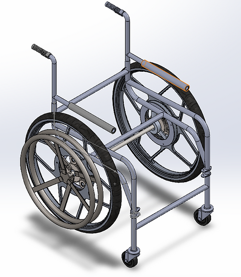

The objective of this project was to learn how to design a wheelchair with special requirements targeting certain type of users. The project was so helpful since it helped improve many skills and knowledge in using CAD software as well as learning how to create successful plans to achieve the desired results and requirements.
Furthermore, the wheelchair was designed to have a reversed motion by implementing planetary gear system that helps increase the torque to make the propulsion easier and smoother.
This wheelchair was designed for users with only one functional arm and one functional leg.
